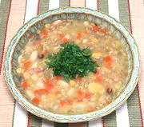

|
Grain & Bean Harvest SoupItaly - Crapiata | ||||
| Makes: Effort: Sched: DoAhead: |
16 cups *** 1 day Yes |
This wonderful soup is perfect for Samhain! Of grains, beans, grass pea and vegetables, it's an ancient harvest celebration dish, still very much usable today. | |||
| The name of this soup, from Latin, implies drunkenness, suggesting wild harvest celebrations. This version is "modernized" by adding White Beans and Potatoes from the New World, but some go farther and include Tomatoes. | |||||
|
|
----- 1/2 1/2 1/2 1/2 1/2 1/2 ------- 8 10 7 6 ------- 7 1/2 1 ------- ar |
--- c c c c c c --- oz oz oz oz --- c T t --- |
-- Soaked Farro (1) Pearled Wheat (2) Fava Beans,dry (3) Chickpeas dry White Beans (4) Grass Peas (5) -- Vegies Potatoes (6) Onion Carrots Celery -------- Water Salt Pepper -- Garnish Olive Oil ExtV |
Do Ahead (overnight - 5 min work)
|